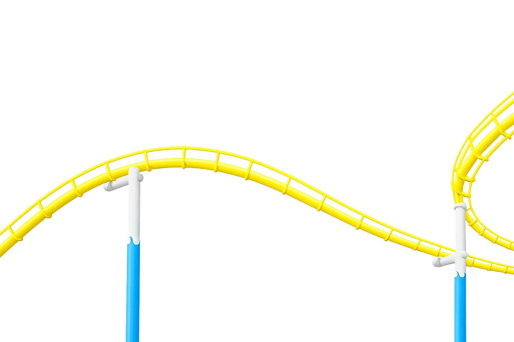
저는 매년 서울대공원을 방문할 만큼 서울대공원을 좋아합니다. 넓은 공간 속에서 자연을 가까이 느낄 수 있고, 다양한 시설과 활동을 경험할 수 있다는 점이 서울대공원만의 매력이라고 생각합니다. 하지만 이러한 장점에도 불구하고 앱을 이용하는 과정에서는 원하는 정보를 찾기 어렵거나 기능을 활용하기 불편한 부분이 있었습니다. 이에 서울대공원의 매력을 더욱 효과적으로 전달할 수 있도록 앱 리뉴얼 프로젝트를 진행하였습니다.
BACKGROUND
서울대공원은 넓은 규모와 다양한 시설을 갖춘 공간으로, 방문객의 원활한 이용을 위해 앱의 역할이 중요합니다.
하지만 현재 앱은 정보 탐색과 기능 접근 과정에서 불편함이 존재하여 사용자 경험 개선의 필요성이 있었습니다.
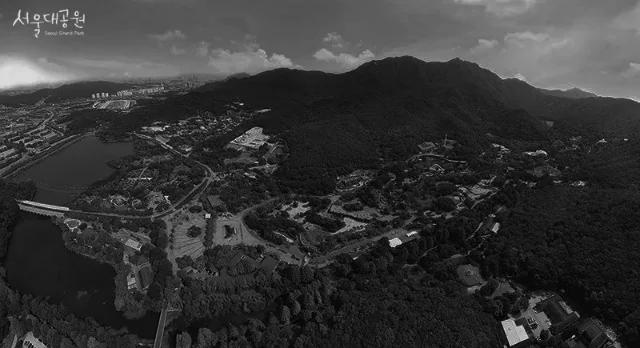
출처: 서울대공원 제출 자료
서울대공원 앱을 분석한 결과, 사용자 경험을 저해하는 여러 문제점을 발견할 수 있었습니다. 중복된 기능 구조, 외부 사이트 이동 유도, 비직관적인 길찾기, 숨겨진 마이페이지 등을 중심으로 개선이 필요한 핵심 문제점을 도출하였습니다.
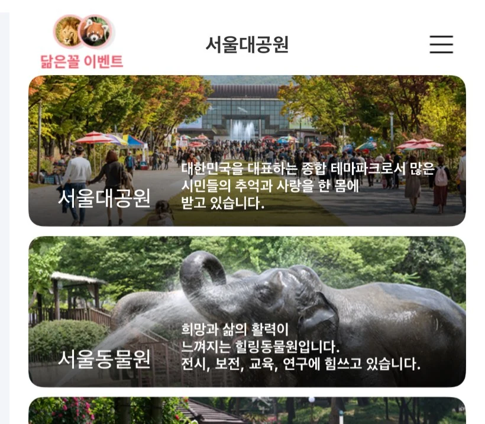
홈 화면과 공원길찾기 메뉴에서 동일한 길찾기 기능을
제공하여 기능 구조가 중복되어 있었습니다.
탭바에 예약안내 메뉴가 있지만, 실제 예약을 진행하려면
외부 사이트로 이동해야 하는 불편함이 있었습니다.
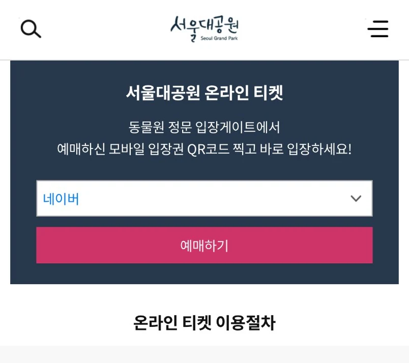
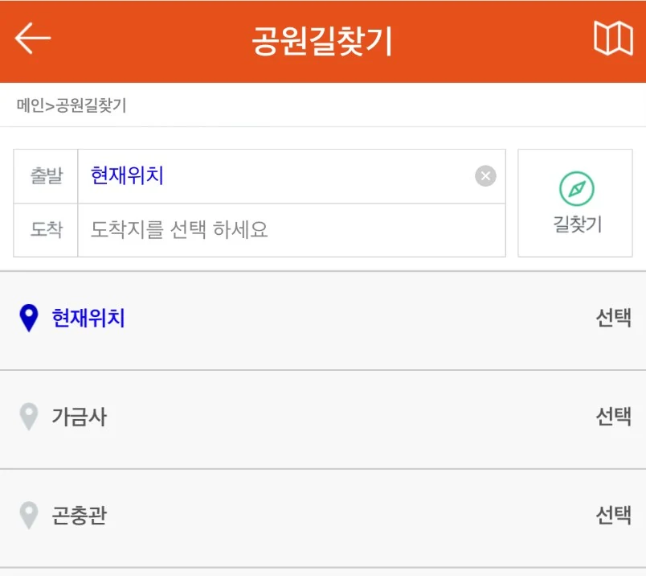
텍스트 중심의 위치 안내 방식으로 사용자가
장소를 직관적으로 파악하기 어려웠습니다.
마이페이지가 햄버거 메뉴 내부에 위치해 있어 사용자가
기능을 찾고 접근하는 데 불편함이 있었습니다.
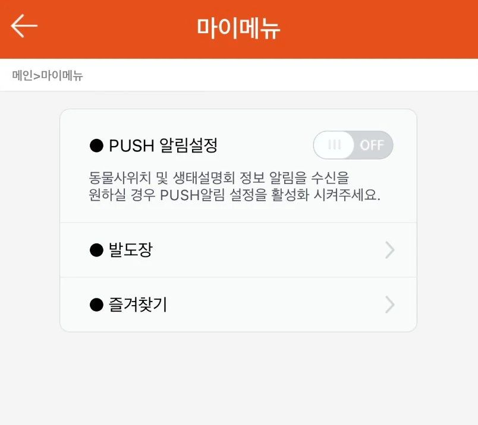
서울대공원을 방문하는 다양한 유형의 사용자를 가정하여 페르소나를 설정하였습니다. 앱 이용 과정에서 겪을 수 있는 불편 사항과 요구사항을 분석하여 서비스 개선 방향을 도출하였습니다.
아이와 함께 넓은 공원을 다니다 보니 길을 찾는 데 시간을 너무 많이 써요.김민지 | 38세 | 주부
원하는 기능을 찾으려면 메뉴를 계속 눌러봐야 해서 불편해요.이준호 | 17세 | 고등학생
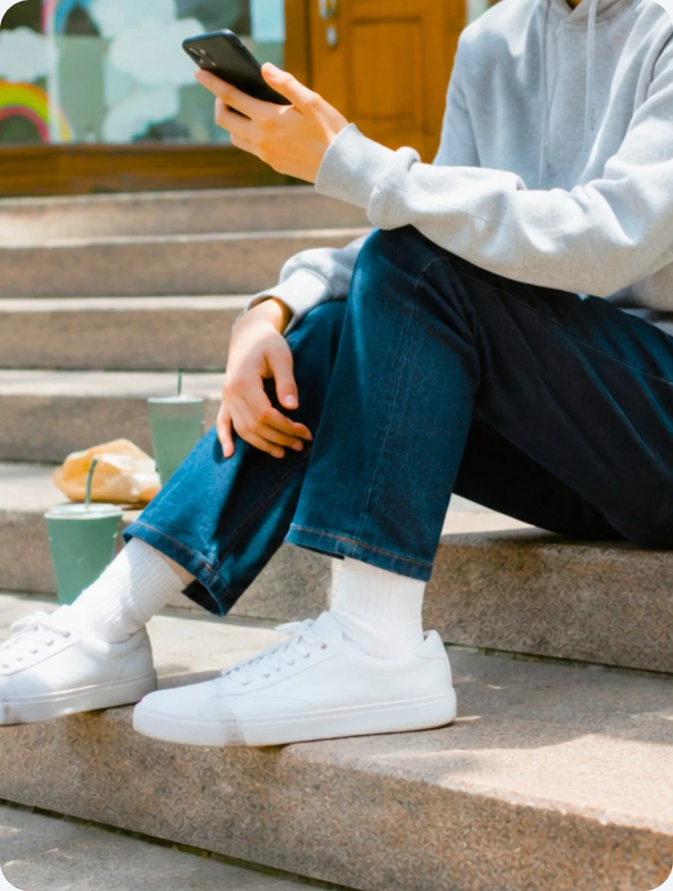
예매하려고 다른 사이트로 이동하는 과정이 번거롭게 느껴져요.박서연 | 26세 | 회사원
사용자가 공원 내 정보를 더욱 쉽고 빠르게 확인할 수 있는 환경을 제공하기 위해 테마파크 서비스와 위치 기반 서비스를 벤치마킹하였습니다. 이를 통해 서비스에 적용할 수 있는 정보 구조와 편의 기능을 분석하였습니다.
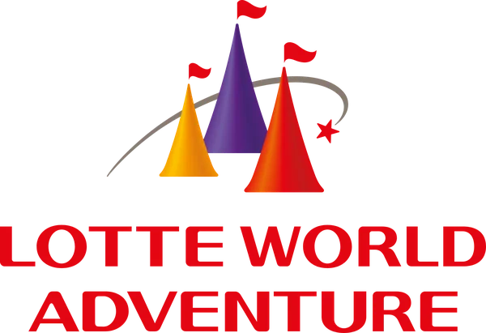
홈 화면에서 공지 및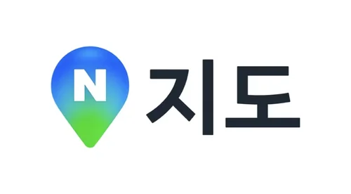
출발·도착 선택서울대공원의 자연 친화적인 이미지와 즐거운 관람 경험을 시각적으로 전달하기 위해 디자인 시스템을 제작하였습니다. 자연과 즐거움의 이미지를 담은 색상과 폰트를 활용하여 브랜드 아이덴티티를 표현하였습니다.
Together
with nature
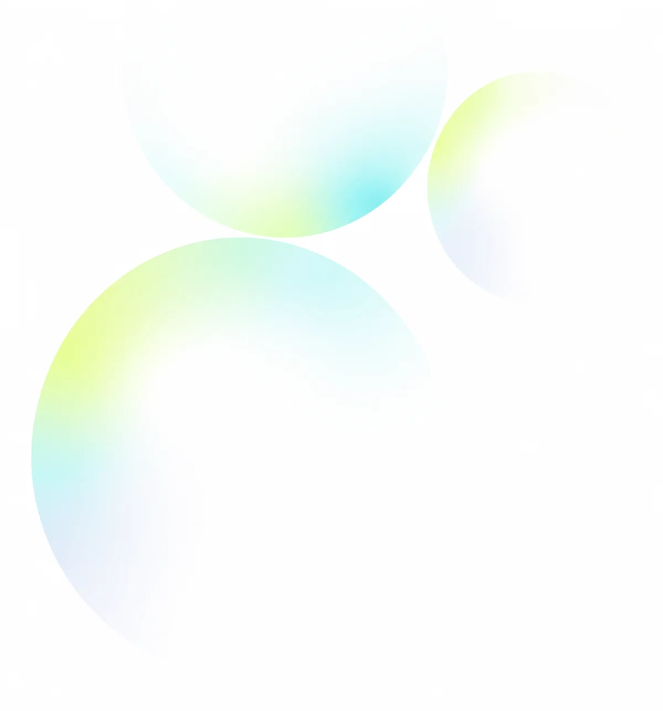
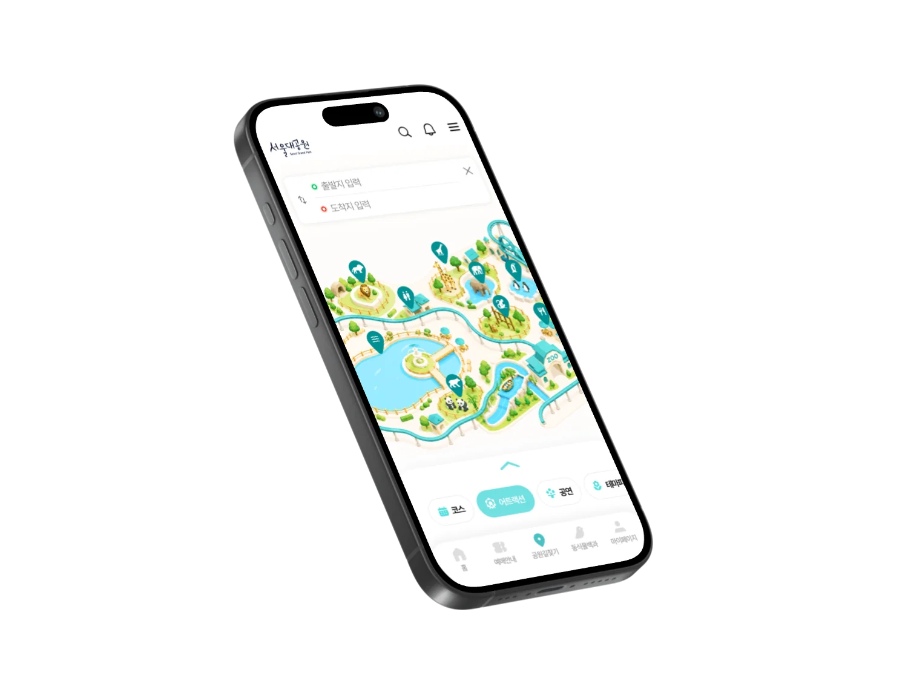
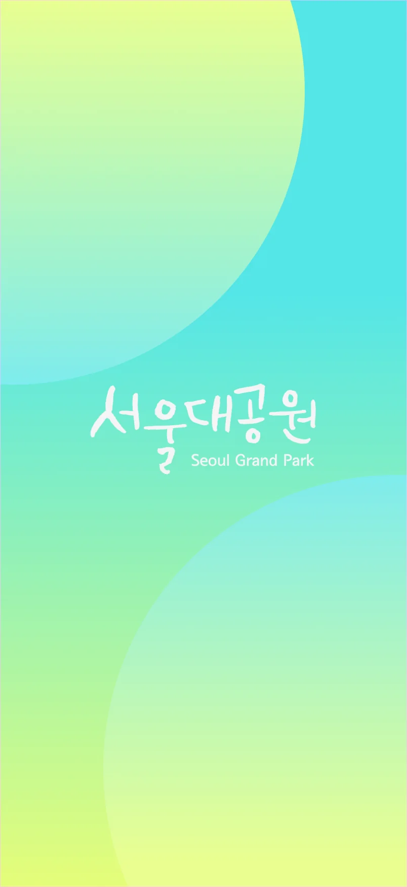
일관성 있는 사용자 경험과 효율적인 화면 설계를 위해 UI Kit를 제작하였습니다. 아이콘, 버튼, 카드, 네비게이션 등 주요 UI 컴포넌트를 체계적으로 정리하여 화면 전반의 통일성과 사용성을 높였습니다.
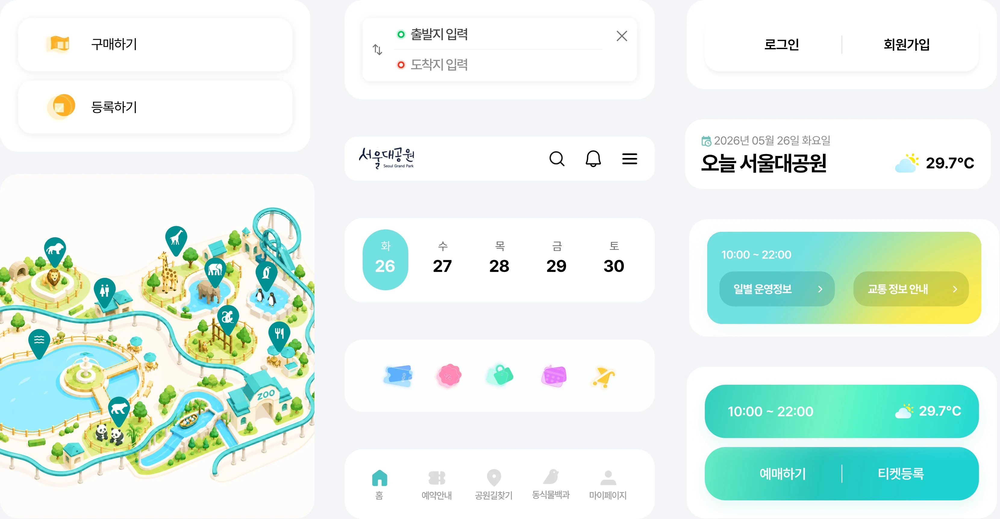
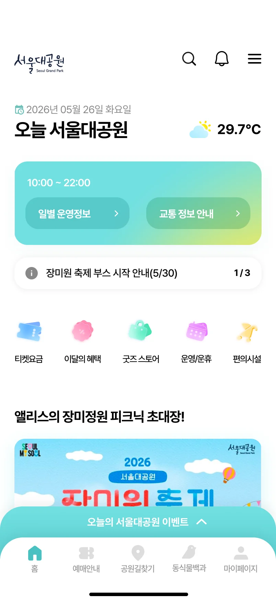
기존에는 길찾기 중심의 카테고리만 제공되었던 홈 화면을 사용자가 필요한 기능과 정보를 한눈에 확인할 수 있는 구조로 개선하였습니다.
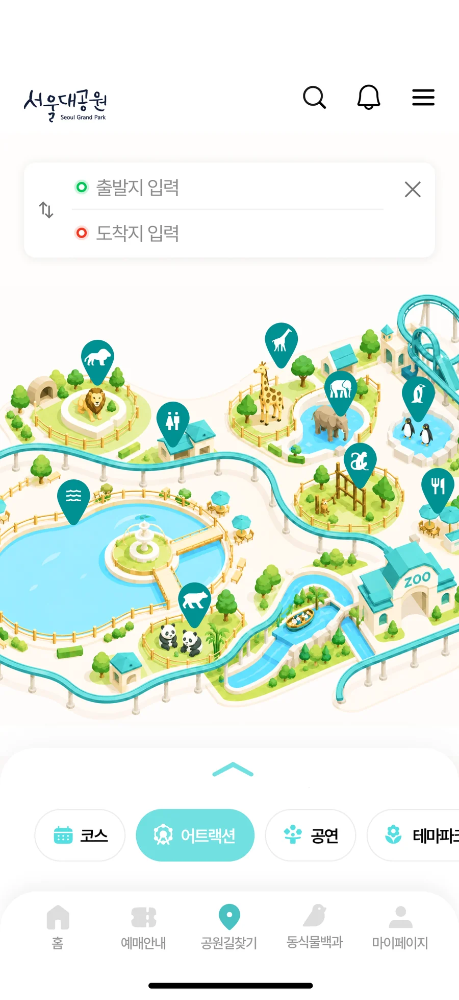
기존의 텍스트 중심 길찾기 방식에서 벗어나 이미지 지도를 활용하여 사용자가 더욱 직관적으로 길을 찾을 수 있도록 개선하였습니다.
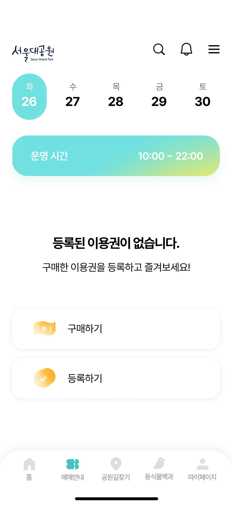
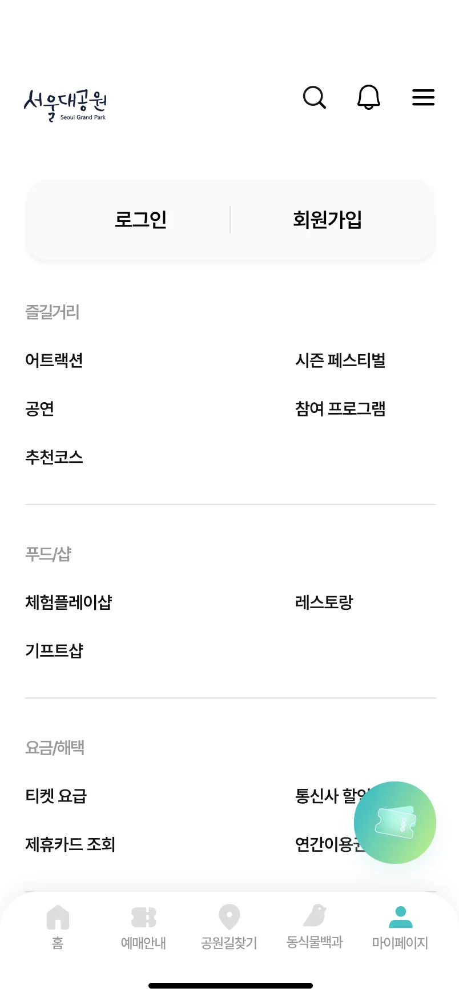
기존 예약안내 페이지와 마이페이지는 각각 외부 사이트 이동과 낮은 접근성이라는 문제를 가지고 있어 이를 개선하여 사용자가 필요한 기능에 더욱 빠르고 편리하게 접근할 수 있도록 제작하였습니다.